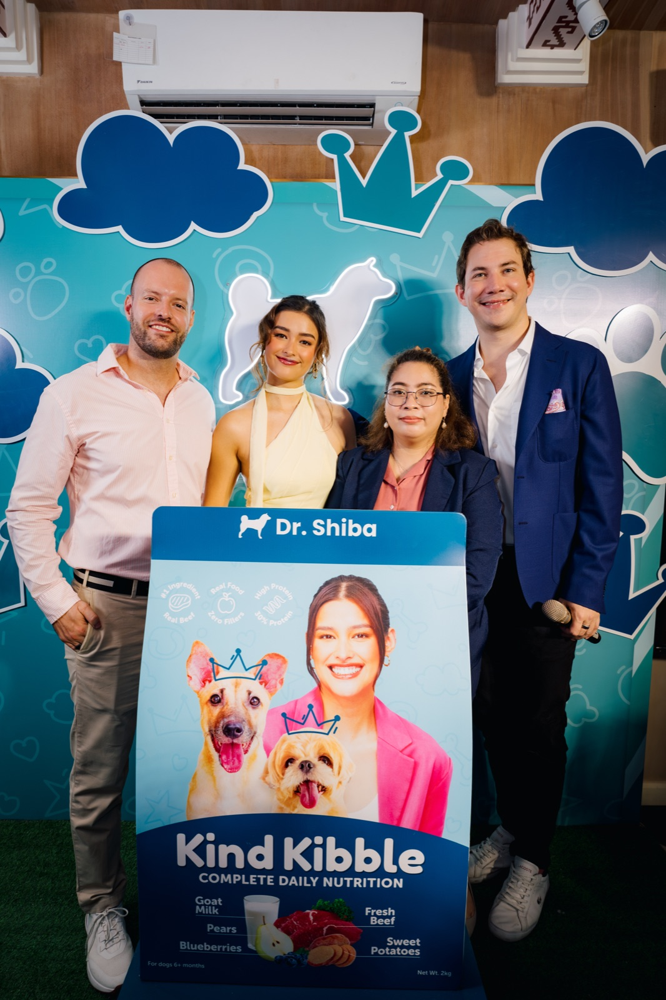
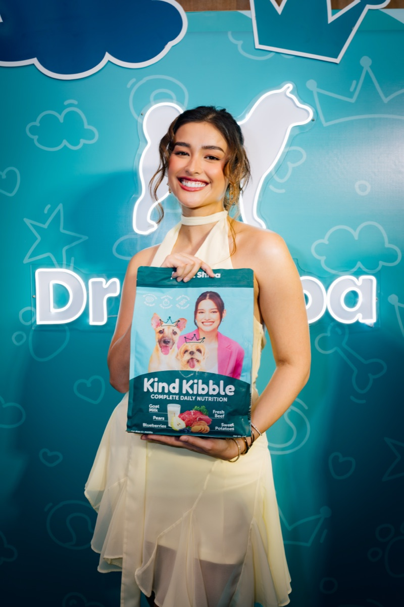
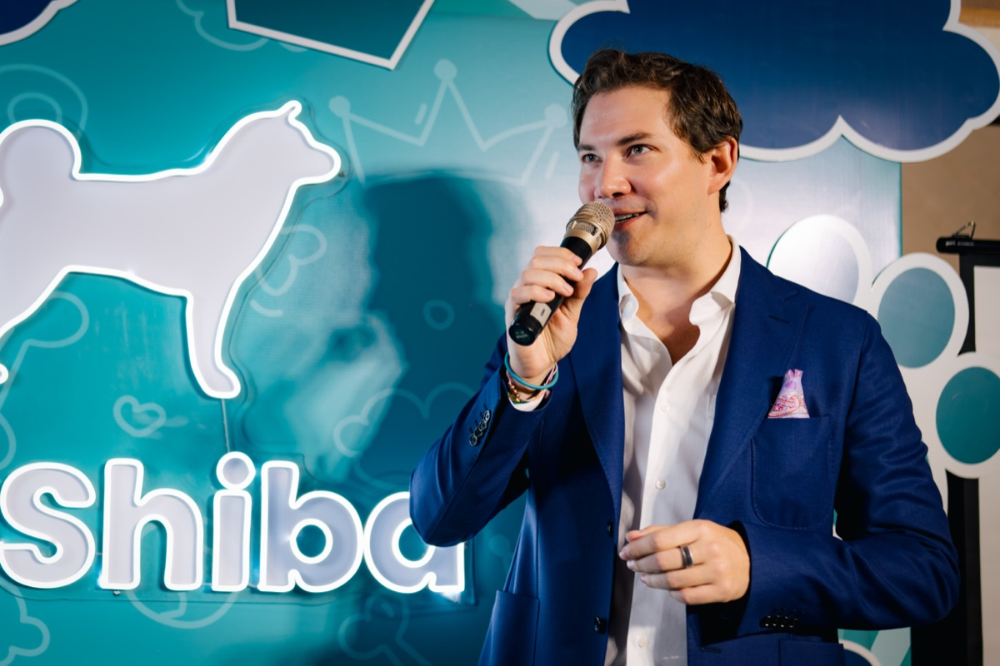
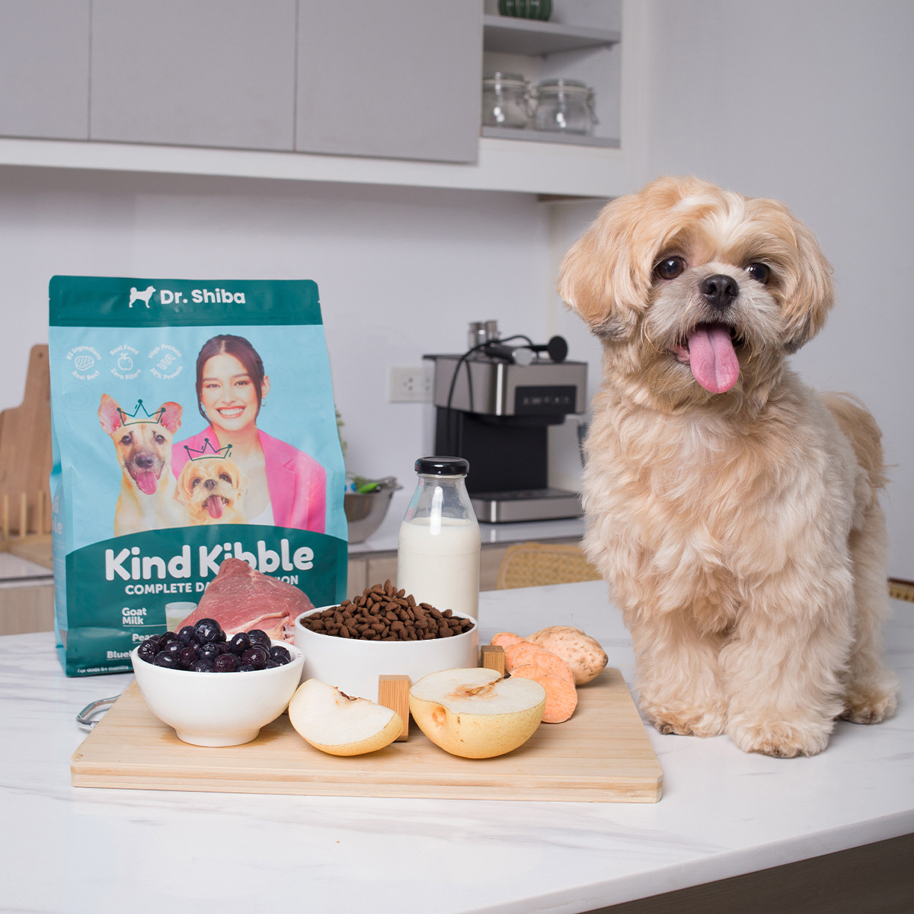

A dog food launch that ran on the country's business desks.
One highlight from the work we've done with Dr. Shiba. The brand was launching Kind Kibble, a premium dry dog food, and pet news rarely makes BusinessWorld. Our job was to make sure this one did, with a Willy Wonka-themed event, a Hollywood ambassador, and a story editors would actually clear space for.
 Co-founders Tim Michael and Philipp Renner with Liza Soberano at the Kind Kibble unveiling
Co-founders Tim Michael and Philipp Renner with Liza Soberano at the Kind Kibble unveiling
A new dog kibble nobody had to write about.
Dr. Shiba was extending out of supplements into dry dog food, a category dominated by global FMCG names with bigger budgets and longer shelf history. The product story was strong — 56% fresh beef, 30% protein, real superfoods, no fillers — but the wider press has very little appetite for "new pet food launches."
To matter beyond the pet community, Kind Kibble needed an event that gave editors something visual, a credible founder on the record, and an ambassador the entertainment and lifestyle desks would already follow.

A Golden Ticket, a Hollywood face, and three angles cut for three kinds of desk.
We built the launch around a "Golden Ticket to high-quality dog nutrition" frame, a Willy Wonka-themed event editors could photograph, and three distinct story angles: a business story for the FMCG and food press, a celebrity story for entertainment desks with Liza Soberano on the record about her Samoyed Yuna, and a service-led "what to actually feed your dog" angle for lifestyle and pet desks.
Both founders, Phil Renner and Tim Michael, were briefed and on the record, so the story held up under business-press scrutiny long after the launch cameras left.
- A themed event (Willy Wonka / "Golden Ticket") with a built-in headline hook
- Liza Soberano on the record about her own dog, in her own voice
- Three angles cut for three desks: business, entertainment, lifestyle
- Both founders speaking, so the business story had substance past day one
National coverage. Business, entertainment, and lifestyle, all in one launch window.
The Kind Kibble launch ran in BusinessWorld ("Healthy kibble for dogs now available"), Rappler ("LOOK: Dr. Shiba hosts fun pet day with Liza Soberano"), The Philippine Star ("Liza Soberano advises longtime dog owners to make 'disciplined' diets"), Daily Tribune (twice: "Liza Soberano joins Dr. Shiba family" and "Liza Soberano joins the dogs"), Manila Standard ("A game changer in pet nutrition"), Malaya Business Insight ("Golden ticket to high-quality dog nutrition"), Wazzup.PH, Orange Magazine, Village Pipol, plus a long tail of pet and lifestyle creators.
The "Golden Ticket" headline got picked up nearly word-for-word across the secondary press, which is exactly what a launch line is supposed to do.
The Willy Wonka launch, in photos.
Japonesa, Poblacion. Co-founders Phil Renner and Tim Michael, brand ambassador Liza Soberano, veterinary expert Dr. Rio Racho, and the Kind Kibble unveiling.




Broadcast & video
The launch lived on camera too. Three pieces of video coverage, including Rappler Talk Entertainment.


A dog-food launch on the country's business desks.
MVR × Dr. Shiba · Feb 2025
Coverage
A sample of where the Kind Kibble launch ran. Click through and read.
Coverage verified Feb–May 2025 via direct article URLs and an expanded coverage sweep. Photos courtesy of Dr. Shiba.